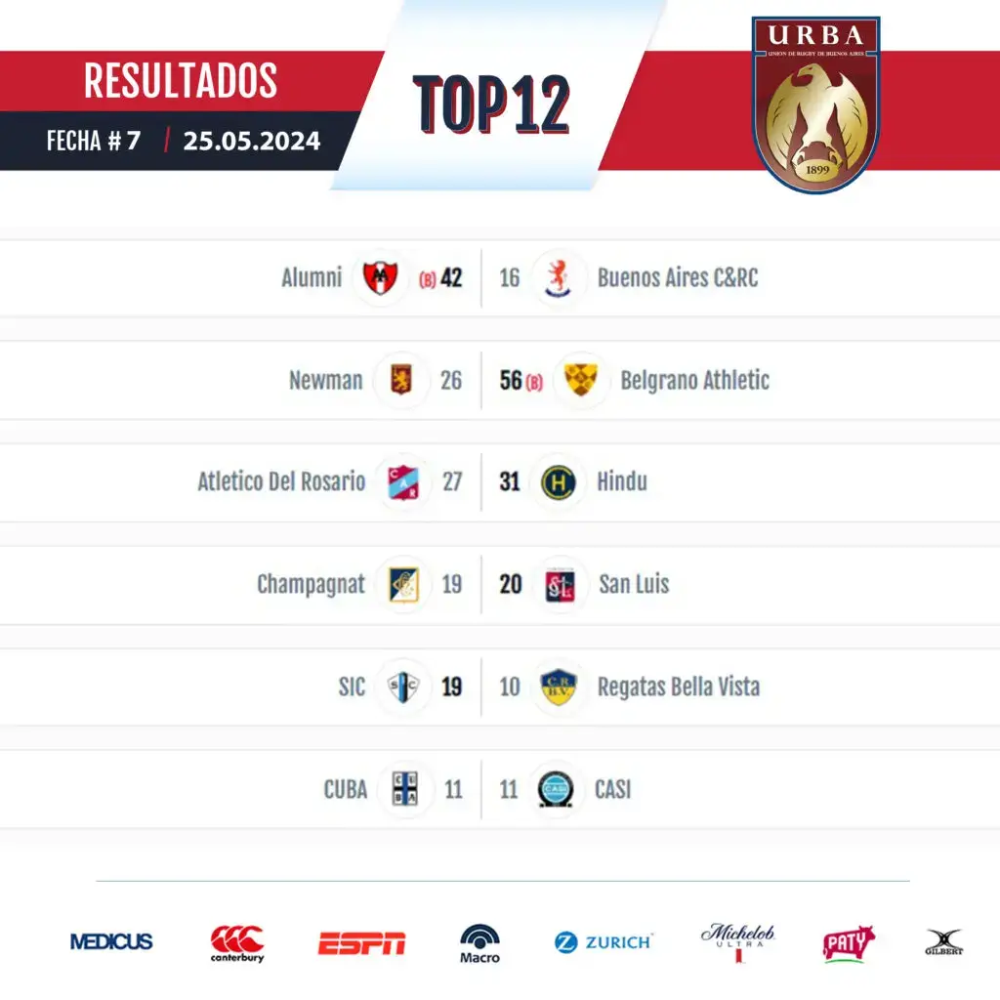

Última fecha Top 12
Emiliano Boffelli confirmó que no podrá estar con Los Pumas
Emiliano Boffelli confirmó a través de sus redes sociales que, debido a una operación en su espalda, no podrá estar en los próximos compromisos con Los Pumas.
En los últimos meses, el argentino se perdió algunos partidos por una lesión en la espalda. En marzo, había sido anunciado como titular ante Stormers y fue baja a último momento. Su vuelta se produjo a fines de abril frente a Cardiff Blues, pero se resintió, debió ser operado y quedó relegado de lo que resta de la temporada.
De esta manera, el back, se perderá los compromisos de la ventana de julio frente a Francia y Uruguay y, en principio, tampoco podría estar disponible para gran parte del Rugby Championship. La recuperación le demandaría tres meses y podría estar de regreso a principios de septiembre.
Quiénes somos
Somos un grupo de amigos que formamos un programa de radio en 2016, enfocándonos en el rugby nacional e internacional, y otros deportes. Podés escucharnos los sábados de 13 a 14 horas.
Ir al sitio web de la URBA:

Efemérides
Recordá el gran triunfo de Los Pumas vs Nueva Zelanda del 2022 por 25-18 acá: